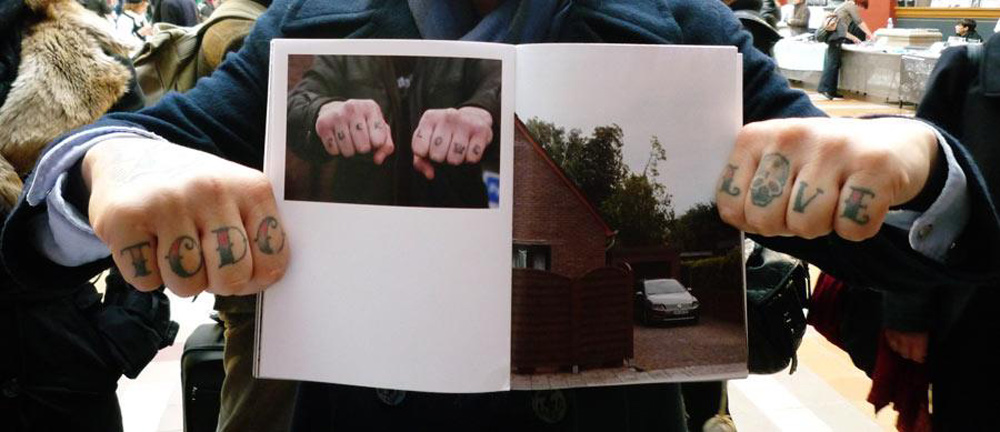

Фатограф і кнігаробца Ніко Баўмгартэн (Nico Baumgarten) распавядае пра свой досвед выдання кніг і сітуацыю з самавыдавецкім рухам у свеце фатаграфіі.
Ніко бачыць кнігі як шлях да вызвалення мастака, як пратэст супраць цяжару арт-індустрыі, і, вядома, як шанец «зрабіць так, як ён ці яна хоча». Кніга — гэта медыум для гісторый, складанейшы за тыя, што мы можам распавесці ў посце на сайце ці нават на сцяне галерэі.
Ён вывучаў фатаграфію ва ўніверсітэце IDEP у Барселоне і справу кнігапляцення ў CFP Bauer у Мілане. Cамавыдаў тры кнігі.
Феномен самавыдавецтва як шлях мастацкага выказвання стаў папулярным зусім нядаўна. Як ты лічыш, чаму гэта адбылося так хутка і шырока?
Я думаю, што так адбываецца з трох нагодаў. Першая — тэхнічнае развіццё: ужо няма вялікіх складанасцяў надрукаваць шмат старонак па даступных коштах. Другая — я перакананы, што свет фатаграфіі, як і свет мастацтва ўвогуле, — надзвычай элітарны асяродак, які вядзе цябе вельмі вузкімі сцежкамі. Калі ты хочаш выстаўляцца ў галерэі, то мусіш стварыць фатаграфіі, дзе кожная будзе ідэальным прадуктам для набыцця інвестарамі. Гэта абмяжоўвае шляхі самавыяўлення. Цяжка быць выстаўленым у галерэі, ці культурным інстытуце, ці музеі. Але каб самавыдаць кнігу, не патрэбнае нечае адабрэнне, ты проста робіш усё самастойна.
Трэцяя прычына папулярнасці фотакніг — рост комплексных магчымасцяў для стварэння паведамлення, аповеду гісторыі, магчымасць рабіць што заўгодна са сваёй фатаграфіяй. Ты можаш зрабіць кнігу з адной фатаграфіі ці з тысячы, такое ўжо рабілі. Галерэі, музеі, рэдактарскі свет моцна абмяжоўваюць у тым, як ты прадстаўляеш сваю працу, але з фотакнігамі можна быць цалкам свабодным.
Такі працэс больш дэмакратычны для мастака, але існуе кніжны рынак, дзе некаторыя кнігі каштуюць цэлы стан. Самавыдаўцы звычайна выпускаюць маленькія тыражы кніг, якія фізічна недасяжныя вялікай колькасці людзей. Ці сапраўды такі накірунак настолькі дэмакратычны?
З пункту гледжання аўтара, нашмат прасцей выказаць сябе праз самавыдавецтва. Мяне непакоіць, што праца часта скончваецца тым, што кніга становіцца даступнай толькі для багатых людзей. Як практыкуючы самавыдавец, я лічу, што вельмі істотна імкнуцца пазбягаць такіх механізмаў і не служыць ім. Напрыклад, не прапаноўваць прыгажэйшыя версіі кніг для багатай аўдыторыі і не ўздымаць кошт, калі амаль усе кнігі прададзеныя. Гэтыя стратэгіі мяне раздражняюць.
Параўноўваючы з галерэйным друкам, фотакнігі — шлях больш даступны і просты. Давайце нават не будзем размаўляць пра кошт за адну выяву. Так, я б сказаў, што першы крок у адступленні ад рэалій белага кубу быў зроблены, але той самы стары істэблішмэнт усё яшчэ спрабуе вярнуцца. Мы мусім гэтага сцерагчыся і супрацьстаяць гэтаму.
Ніко робіць вокладку для кнігі «але хаця б ты тут, каханне маё»
Сёння многія кажуць пра кнігу як аб’ект, а не сродак перадачы інфармацыі.
Улічваючы ўвесь самавыдавецкі рух, мастацкая кніга (тэрмін выкарыстаны, каб адносіцца да кнігі як да мастацкага аб’екта, а не канала перадачы інфармацыі. — Заўв. Евы Раўдсэпа) стала шырэй вядомай. Шматлікія аўтары ўцягваюцца ў працэс вытворчасці кніг, што робіць яго аўтэнтычнейшым. Тут ёсць свабода выкарыстання розных матэрыялаў, каб рабіць забаўныя рэчы. Калі скажаш выдавецкаму дому: «Гэй, я хачу выкарыстоўваць гэты матэрыял» — ці — «Хачу штосьці з такой прымочкай», — выдавецтва адкажа: «Ок, але гэта будзе каштаваць у N разоў болей». Фатографы-самавыдаўцы звычайна публікуюцца не каб зарабіць грошы, а каб іх праца пабачыла свет.
Я думаю, што разам з самавыдавецкім існуе яшчэ адзін бум, калі людзі з’язджаюць з глузду праз наварочаныя кнігі, дзе кожнай кнізе ўласцівая адмысловая асаблівасць. Але я перакананы, што кнізе ў асноўным трэба падтрымліваць ейны змест. Я бачу шмат бессэнсоўных кніг — людзі думаюць пра кнігу як аб’ект, з якім яны робяць нейкую забаўную штуку, што, відавочна, прыцягвае увагу, але не дапамагае распавесці гісторыю. Класічным дрэнным прыкладам з’яўляецца кніга Дэвіда Алана Харві (David Allan Harvey) «заснавана на сапраўднай гісторыі» (based on a true story), якая для мяне проста пра паўночнаамерыканскага турыста, што едзе ў Рыа дэ Жанэйра. Хай ён і добра вядомы фатограф, але здымае клішэ і стэрэатыпы, якія звычайна толькі ўскладняюць жыццё бразільцам. Пасля ён складвае гісторыю як забаўны аб’ект, і таму атрымоўвае намінацыю кніжнай прэміі Aperture Paris Photo. Можна зрабіць лайновую кнігу, такое здараецца з кожным, але я не разумею, чаму куратары і людзі ў тэме дазваляюць падмануць сябе такімі таннымі манёўрамі, думаючы: «Оў, які забаўны аб’ект».
Тым не менш, я думаю, што гэты бум ужо сканчаецца, і з ім спадае вар’яцтва кніжных фарматаў. MACK books — добры прыклад: у гэтым годзе яны выдалі шмат кніг з амаль класічным дызайнам. Напрыклад, кніга Джанэт Ділэйні (Janet Delaney) «Поўдзень рынку» (South of Market) з класічнай вёрсткай: фота аднаго памеру, часам здымкі справа, часам — злева ці на абодвух баках. Такая вёрстка мае сэнс, кніга сапраўды пра змест, прыгожая і выглядае значна больш традыцыйна.
Калі вы маеце проста паслядоўнасць выяў, то можна стварыць PDF, а не кнігу — чаму не?
Ёсць сервісы друку на замову кшталту Blurb, дзе ўсё, што ад цябе патрабуецца, загрузіць кантэнт — і з яго створаць кнігу. Ці бачыш ты ў гэтым самавыдавецкую дзейнасць?
Так, гэта абсалютнае самавыданне, таму што няма таго, хто вырашае замест цябе, выйдзе кніга ці не.
Але ў той жа час самавыданне дазваляе даследаваць магчымасці кнігі як аб’екта, тады як з Blurb, у нейкім сэнсе, усе кнігі атрымліваюцца аднолькавымі.
Так, для мяне друкаванне кнігі з дапамогай Blurb не такое цікавае. Я лічу, што гэта вельмі абмяжоўвае. Але гэта зручна для людзей, якія часцей бачаць свае здымкі на экране. З дапамогай Blurb яны могуць выпрабаваць іх межы і надрукаваць на паперы. Такім чынам яны атрымліваюць кнігу са сваімі здымкамі, і гэта ўжо крок наперад.
Але трэба мець на ўвазе, што Blurb зараз працуе з Amazon. І Amazon — буйная кампанія, якая працуе над манапалізацыяй кніжнага рынку. Яны прытрымліваюцца бізнэс-філасофіі, якая драматычна не супадае з духам самавыдавецтва.
Ці лічыш ты, што кожны праект пасуе да таго, каб стаць кнігай, што справа толькі ў пошуку правільнага фармату? Ці ты думаеш, што некаторым праектам не трэба трансфармацца ў кнігі?
Я думаю, што не кожнаму праекту пасуе кніжны фармат. Што прыгожа ў кніжным фармаце, дык гэта магчымасць абраць мноства напрамкаў і вялікая верагоднасць, што з любой працы атрымаецца кніга. Але адначасова існуюць працы, якія не патрабуюць кніг. Напрыклад, усе віды нямецкай аб’ектыўнай тыпалогіі прац, якія паўтараюць адзін і той жа матыў зноў і зноў, як Бернд і Хілла Бэхер (Bernd and Hilla Becher) з іх воданапорнымі вежамі. Такія працы ўражваюць на выставе і ў вялікафарматным друку. Для кнігі гэта плоскі наратыў. Тым не менш, калі кніга ўсяго толькі кантэйнер фатаграфій, яна не вельмі цікавая сама па сабе, але ўсё яшчэ дае магчымасць прысесці на канапу і праглядаць фотаздымкі.

Фатаграфія з Facebook Ніко як частка прамоцыі ягонай кнігі «Лер», 2012
Сёння, калі мы спажываем амаль усю дзённую дозу інфармацыі праз онлайн медыя, якім ты бачыш уплыў кнігі як аб’екта і як досведу на будучыню кніг?
Калі назіраць за бумам самавыдавецтва, заўважна, што ён адбываецца амаль так, як і бум электронных кніг. Гэта два напрамкі, у якіх кніга развіваецца сёння.
Я думаю, крута рабіць нешта фізічнае. Але калі сам рубіш дрэвы і запаўняеш сваю прастору фізічнымі аб’ектамі, гэта павінна мець прычыну. Сёння ты павінен апраўдаць стварэнне фізічнай кнігі, таму людзі прыдумваюць розныя фарматы для кніг, ставячыся да іх і як да аб’екту, і як да досведу. Калі вы маеце проста паслядоўнасць выяў, то можна стварыць PDF, а не кнігу — чаму не?
Якія фотакнігі цябе асабліва ўразілі?
Кніга, якая насамрэч мяне кранула — «Цыганскія вандроўкі» (The Roma Journeys) Хоакіма Эскільдсэна (Joakim Eskildsen), фатографа, які таксама вывучаў мастацтва вытворчасці кніг. Гэта праект пра цыганскія супольнасці па ўсім свеце. Ён вандраваў і працаваў над тэмай некалькі год. Ён і кнігавытворца, і выдатны фатограф, і, як я зразумеў з яго фатаграфій, яшчэ і выбітны гуманіст. Кніга абыходзіць бокам усе клішэ пра цыган, і вынікам паўстае важны ўклад у развіццё ўзроўню разумення і талерантнасці да цыган. Я зацікаўлены ў працах, якія размаўляюць пра свет і якія спрабуюць зрабіць свой унёсак.
Другая мая любімая — праца Хуанана Рэк’юэна (Juanan Requena), якога я сустрэў на ISSP 2012. Ён мае вандроўныя дыярушы, дзе выкарыстоўвае рэчы, якія ёсць у сучасных фотакнігах, але тут ты іх маеш узапраўду: вырваныя ці пашкоджаныя старонкі, ручныя пазнакі на палях, кававыя плямы, машынапісны тэкст. Ён насамрэч уціскае фатаграфіі ці нават цэлую кнігу ў машынку — не пытайцеся ў мяне як — і друкуе на ёй. Гэта вельмі кранальная і інтымная праца, і, відавочна, кніга-адзіная-ў-сваім-родзе.